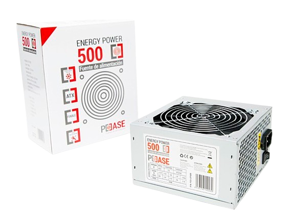
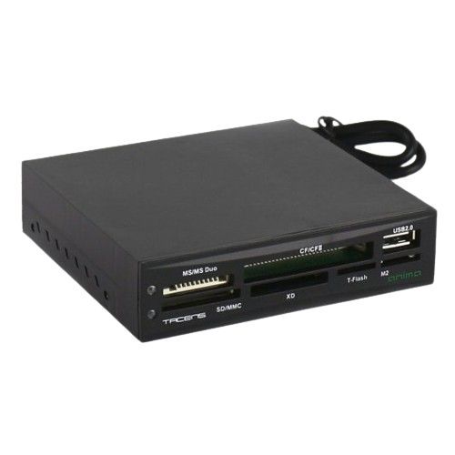

L'encàrrec consisteix en:
Una vegada hem rebut el nostre servidor físic:


El manteniment d'una torre de PC és important per garantir un rendiment òptim i una vida útil més llarga del sistema. El passos que hem seguir nosaltres son aquests:


Un cop netejat i connectat correctament tots els components hem comprovat si funciona, també hem fet una fitxa tècnica per a un major coneixement del nostre PC.
| FITXA TÈCNICA | ||||
|---|---|---|---|---|
| Component | Marca i model | Foto | Justificació | |
| Processador (disipador inclòs) | Intel Core i5-7400 3.00GHz |  |
Per defecte, ens venia un processador Intel Pentium però atès que no complia amb els requisits mínims dels nostres sistemes operatius vam decidir reemplaçar-lo per un Intel Core i5-7400. | |
| Placa base | GIGABYTE GA-H71M-S2H |  |
Per defecte | |
| Memòria RAM | Crucial 8GB DDR3 x 2 (16GB) |  |
Ens venien per defecte 4GB però per complir amb els requisits recomanats de 16GB hem afegit 12GB més. | |
| Disc dur 1 | Crucial MX500 SSD 250GB |  |
Per defecte | |
| Disc dur 2 | WD Green HDD 1TB |  |
No ens venia per defecte però el professor ens ha demanat utilitzar-lo per emmagatzemar les còpies de seguretat. | |
| Font d'alimentació | Energy Power 500W |  | Per defecte | |
| Lector de tarjetes | Kloner |  | Per defecte | |